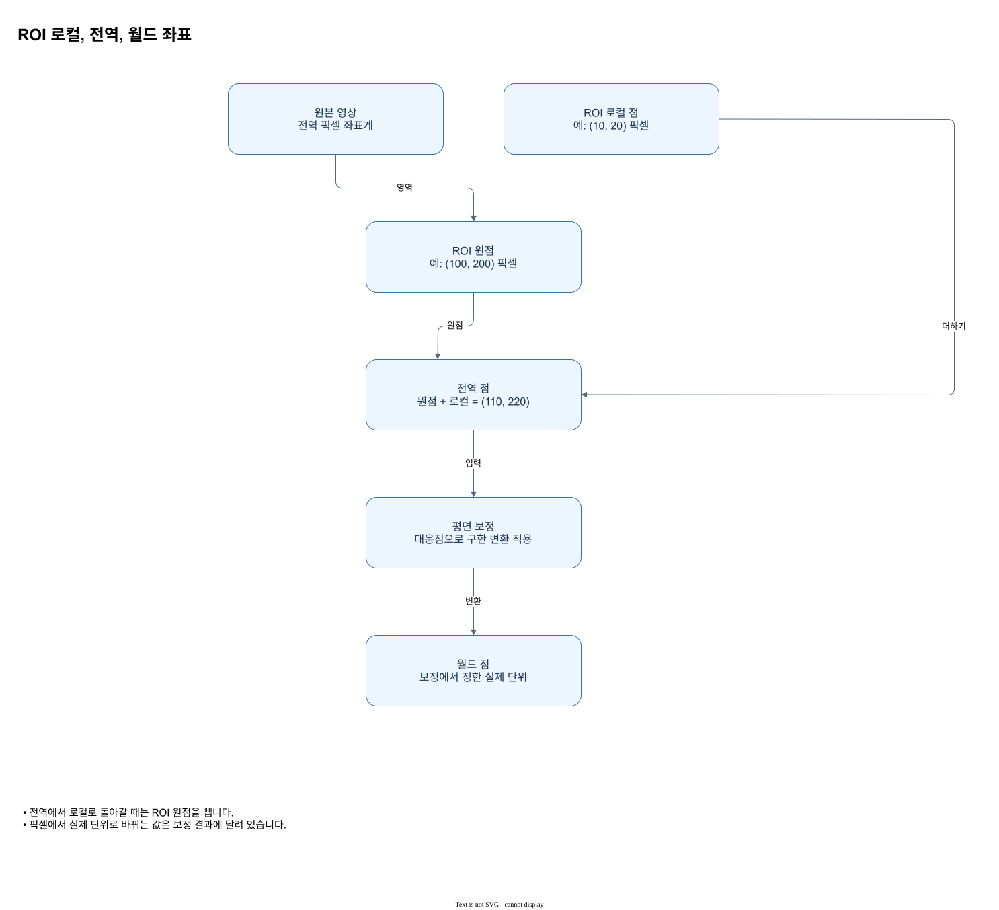
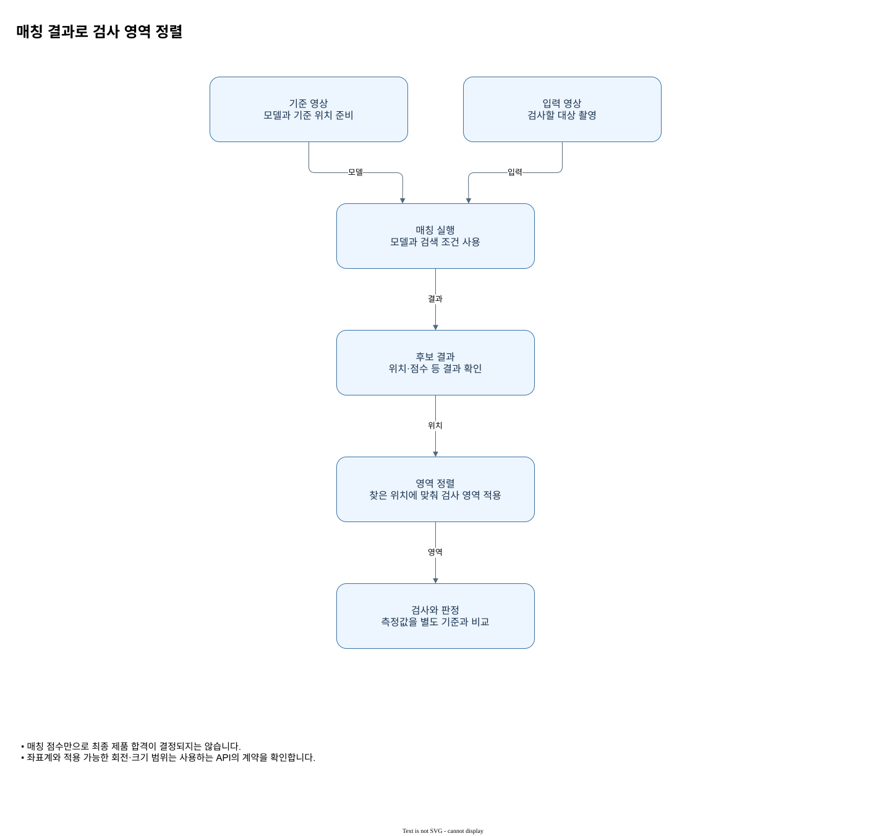
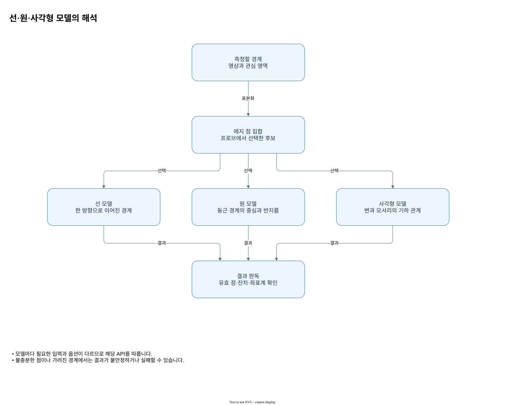
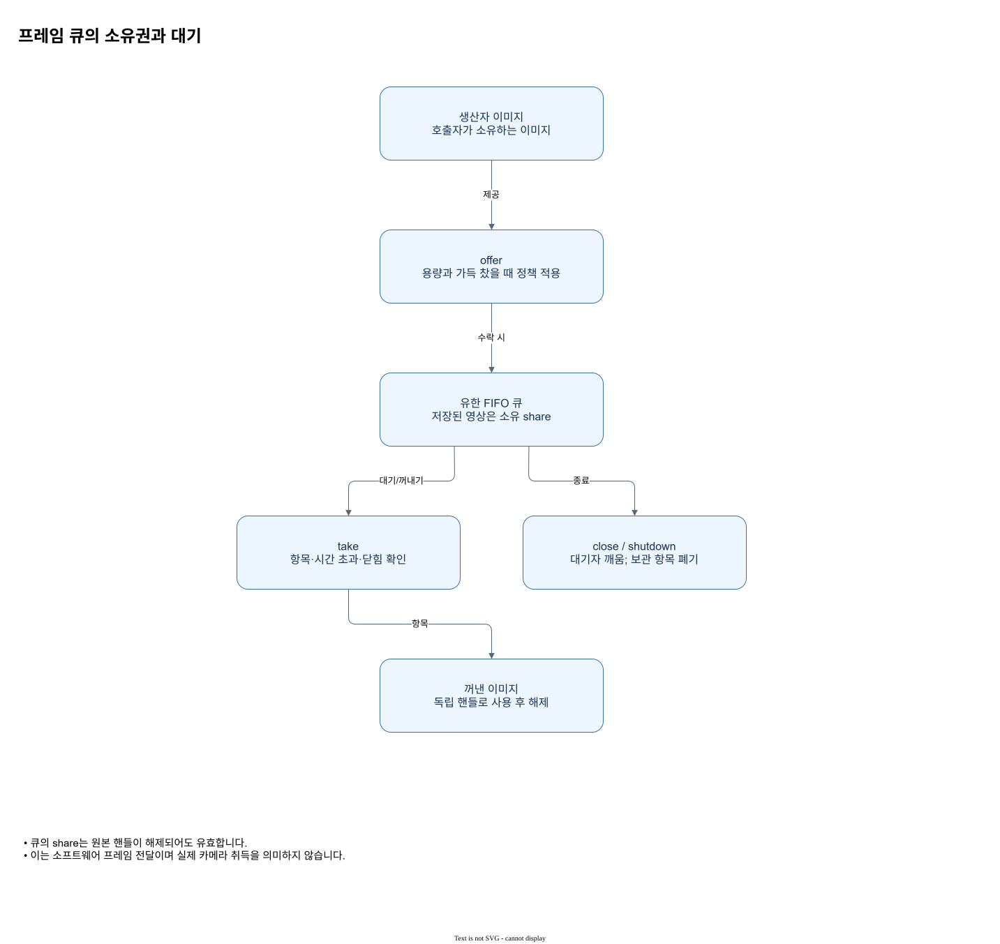
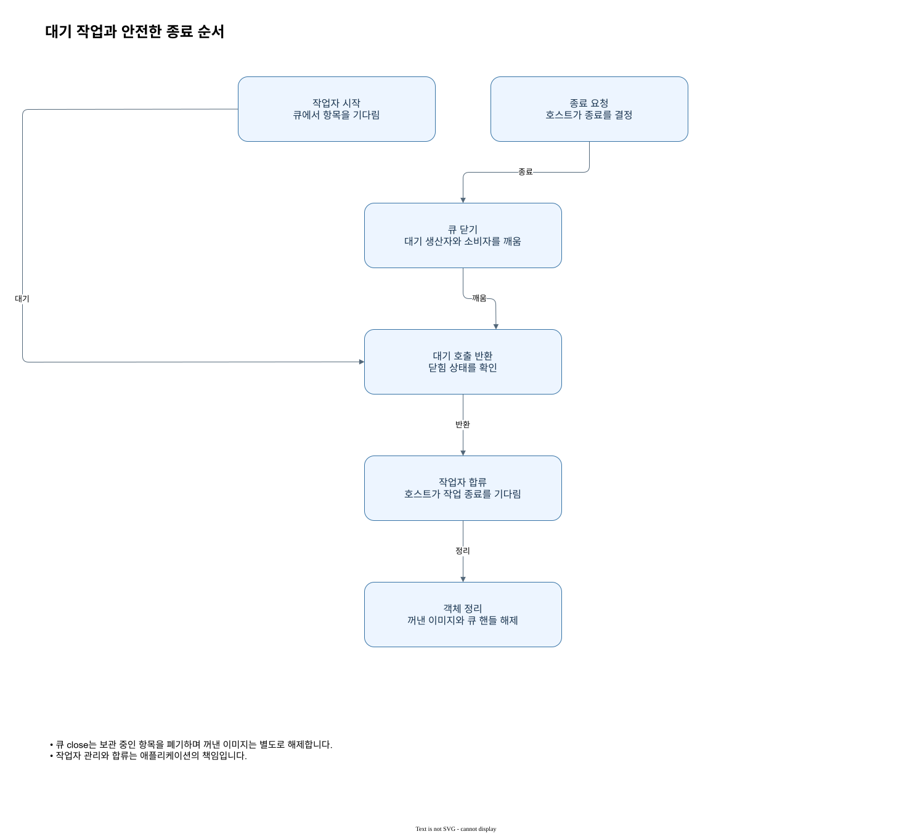

원리와 구조를 시각 자료로 읽기
인포그래픽은 처리 단계와 판독 기준을, 구조도는 객체·저장소·좌표 및 제어 흐름의 관계를 설명합니다. 각 그림은 별도 해설 페이지로 열리며, 관련 설명 본문에서도 바로 볼 수 있습니다.
AntV Infographic · 처리와 판독
 첫 영상 처리 흐름입력에서 마스크와 측정 결과까지 자료형과 결과를 따라갑니다.
첫 영상 처리 흐름입력에서 마스크와 측정 결과까지 자료형과 결과를 따라갑니다. 대각선과 연결성같은 두 전경 픽셀도 연결 규칙에 따라 다른 객체가 됩니다.
대각선과 연결성같은 두 전경 픽셀도 연결 규칙에 따라 다른 객체가 됩니다.
영상 객체와 수명원본과 결과의 사용 범위를 구분합니다.ROI와 영상 좌표부분 영상의 로컬 좌표를 원본 좌표로 옮깁니다.쿼리 구성과 실행연산을 구성하고 실행 결과를 읽는 순서를 보여 줍니다. 형태학의 폭과 반복구조 요소와 반복 적용이 마스크를 바꾸는 과정을 봅니다.
형태학의 폭과 반복구조 요소와 반복 적용이 마스크를 바꾸는 과정을 봅니다. Canny 경계 단계평활화부터 이중 임계값 연결까지 살핍니다.NCC 점수 판독평균 제거와 정규화 상관의 의미를 살펴봅니다.캘리퍼 프로파일선분을 따라 샘플링해 경계 후보를 찾습니다.Lab 색차 계산변환 조건을 맞춘 두 색의 거리를 계산합니다.OCR 영역과 판독문자 인식 전에 영역과 방향을 정하고 결과를 확인합니다.
Canny 경계 단계평활화부터 이중 임계값 연결까지 살핍니다.NCC 점수 판독평균 제거와 정규화 상관의 의미를 살펴봅니다.캘리퍼 프로파일선분을 따라 샘플링해 경계 후보를 찾습니다.Lab 색차 계산변환 조건을 맞춘 두 색의 거리를 계산합니다.OCR 영역과 판독문자 인식 전에 영역과 방향을 정하고 결과를 확인합니다. 깊이 격자와 좌표깊이 격자의 표본과 3차원 위치를 구분합니다.점군과 기하 피팅3차원 점의 집합에서 형상을 추정합니다.
깊이 격자와 좌표깊이 격자의 표본과 3차원 위치를 구분합니다.점군과 기하 피팅3차원 점의 집합에서 형상을 추정합니다. AI 추론 좌표모델 입력과 출력 좌표의 기준을 확인합니다.영상 취득 흐름카메라 또는 시뮬레이터의 상태와 프레임을 구분합니다.PLC 요청과 결과 시뮬레이션요청 ID로 결과를 연결하고 확인하며, Poll의 시간 초과와 Reset을 구분합니다.
AI 추론 좌표모델 입력과 출력 좌표의 기준을 확인합니다.영상 취득 흐름카메라 또는 시뮬레이터의 상태와 프레임을 구분합니다.PLC 요청과 결과 시뮬레이션요청 ID로 결과를 연결하고 확인하며, Poll의 시간 초과와 Reset을 구분합니다. 검사 정렬과 유효 마스크기준 격자에 맞춘 뒤 유효한 위치만 비교합니다.ROI에서 세계 좌표원점 이동과 보정 변환의 순서를 계산합니다.주파수 변환 왕복복소 성분과 역변환 정규화를 함께 보존합니다.
검사 정렬과 유효 마스크기준 격자에 맞춘 뒤 유효한 위치만 비교합니다.ROI에서 세계 좌표원점 이동과 보정 변환의 순서를 계산합니다.주파수 변환 왕복복소 성분과 역변환 정규화를 함께 보존합니다. 실행 환경과 배포개발 환경에서 운영 환경으로 넘어갈 때 확인할 항목입니다.
실행 환경과 배포개발 환경에서 운영 환경으로 넘어갈 때 확인할 항목입니다. 기준 영상과 차분정렬 후 유효 영역의 차이를 판독합니다.
기준 영상과 차분정렬 후 유효 영역의 차이를 판독합니다.draw.io · 구조와 관계
 언어별 API와 네이티브 경계C#과 Python은 C ABI를 통해 Rust 구현에 접근하고 Rust는 공개 API를 직접 사용합니다.
언어별 API와 네이티브 경계C#과 Python은 C ABI를 통해 Rust 구현에 접근하고 Rust는 공개 API를 직접 사용합니다. 이미지 공유와 ROI의 수명Share와 ROI는 저장소를 공유하고 깊은 복사는 독립 버퍼를 만듭니다.
이미지 공유와 ROI의 수명Share와 ROI는 저장소를 공유하고 깊은 복사는 독립 버퍼를 만듭니다. 지연 쿼리의 구성과 실행단계를 정의하고 명시적인 실행에서 결과를 얻습니다.
지연 쿼리의 구성과 실행단계를 정의하고 명시적인 실행에서 결과를 얻습니다.
ROI 로컬, 전역, 월드 좌표ROI 원점을 더해 전역 픽셀 좌표로 바꾸고 보정을 별도 적용합니다.
매칭 결과로 검사 영역 정렬기준 대상을 찾은 뒤 위치에 맞춰 검사 영역을 해석합니다. 캘리퍼: 프로브부터 측정까지프로브에서 에지 후보를 구하고 측정 모델을 피팅합니다.
캘리퍼: 프로브부터 측정까지프로브에서 에지 후보를 구하고 측정 모델을 피팅합니다.
선·원·사각형 모델의 해석측정점의 공간 배치에 맞는 형상을 선택하고 결과와 잔차를 함께 봅니다. 평면 보정의 준비와 검증픽셀과 기준 평면의 대응점을 이용해 변환을 만들고 독립 점으로 확인합니다.
평면 보정의 준비와 검증픽셀과 기준 평면의 대응점을 이용해 변환을 만들고 독립 점으로 확인합니다.
프레임 큐의 소유권과 대기큐에 공유 이미지를 넣고 꺼낸 독립 핸들을 사용하는 흐름입니다. 모의 PLC 요청과 결과 확인명시된 명령과 시간으로 동작하는 SimPlc 상태 흐름입니다.
모의 PLC 요청과 결과 확인명시된 명령과 시간으로 동작하는 SimPlc 상태 흐름입니다. 검사 확장의 입출력 경계입력, 파라미터, 결과와 오류를 분리해 검사 단계를 연결합니다.
검사 확장의 입출력 경계입력, 파라미터, 결과와 오류를 분리해 검사 단계를 연결합니다. 높이 맵에서 점 구름으로격자 셀과 높이를 원점 및 간격으로 3차원 점에 대응합니다.
높이 맵에서 점 구름으로격자 셀과 높이를 원점 및 간격으로 3차원 점에 대응합니다. 글꼴 예제 학습과 판독라벨이 있는 글자 셀로 모델을 학습하고 읽은 결과를 확인합니다.
글꼴 예제 학습과 판독라벨이 있는 글자 셀로 모델을 학습하고 읽은 결과를 확인합니다.
대기 작업과 안전한 종료 순서큐를 닫아 대기자를 깨우고 작업과 보유 객체를 정리합니다.